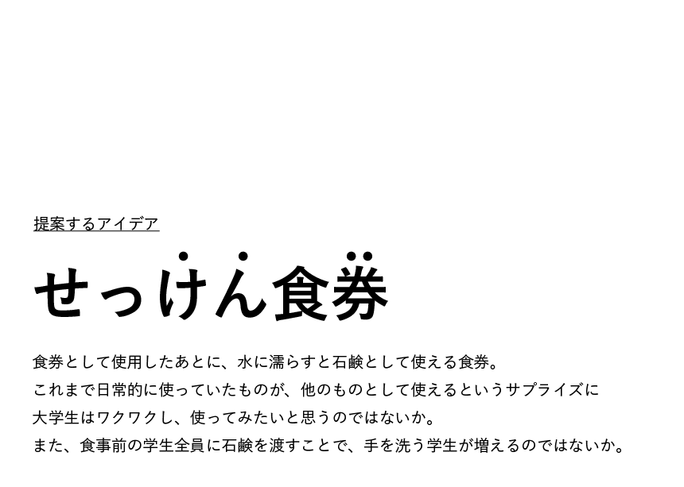

DEMO

↓


食券せっけんの仕組み
こんな広がりが生まれる！
・新しい食のプロセスをつくることができる
これまでは食事の前に石鹸で手を洗うかどうか（もはや手を洗うことすら）個人次第であったが、"食べる前に石鹸を受け取る"という新しい体験により、
多くの人が食事の前に手を洗うようになり不安の少ない食環境を築くことができると考えられる。コロナ対策にもなる。
・学食と学生の新しいコミュニケーションを生むことができる
屋台や露店では香りで食べるものを選ぶこともよくあるが、学食やレストランは香りよりも目で見てメニューを決めることが多い。
学食デザートの香りがついた食券せっけんを使うことで手に香りが残り、学生が学食のメニューを香りで決めるという新しさが生まれる。